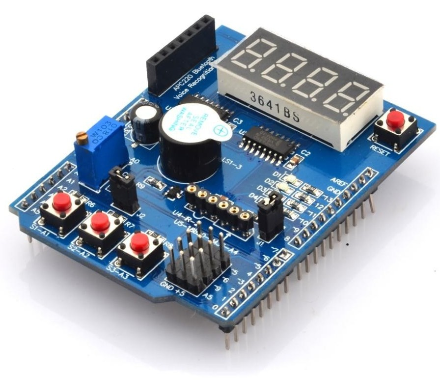

Multifunkčný shied 1.0 #
Popis #
Multifunkčný shied je populárny výukový modul pre Arduino UNO, ktorý je osadený základnými perifériami a konektormi pre pripojenie ďaľších zariadení. Je pinovo kompatibilný s modulom Nucleo-64.


Obr. 55 Modul multifunkčného shieldu, verzia 1.0.#
Zapojenie #
Modul obsahuje nasledujúce komponenty
4-miestny 7-segmentový dislej riadený posuvnými registrami 74HC595
3 tlačítka s pull-up rezistormi
4 LED
1 bzučiak
potenciometer
konektory pre pripojenie ďaľších zariadení
reset tlačítko
Konektory modulu
Periféria |
Nucleo-64 |
Arduino-UNO |
Poznámka |
|---|---|---|---|
Tlačítko S1 |
PA1 |
A1 |
|
Tlačítko S2 |
PA4 |
A2 |
|
Tlačítko S3 |
PB0 |
A3 |
|
Potenciometer |
PC1 |
A0 |
0…+5V |
LED D1 |
PA5 |
D13 |
Nucleo LED |
LED D2 |
PA6 |
D12 |
|
LED D3 |
PA7 |
D11 |
|
LED D4 |
PB6 |
D10 |
|
Bzučiak |
PB3 |
D3 |
|
Display LATCH |
PB5 |
D4 |
|
Display CLOCK |
PA8 |
D7 |
|
Display DATA |
PA9 |
D8 |
Poznámky
Potenciometrom je možné nastaviť napätie do +5V, vstupný rozsah ADC prevodníka mikrokontroléra je len do +3.3V, túto perifériu preto nie je vhodné používať.
K pinu PA5 je doske Nucleo-64 pripojená zelená LED, ktorá ovlyvňuje stav LED D1.